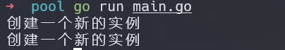
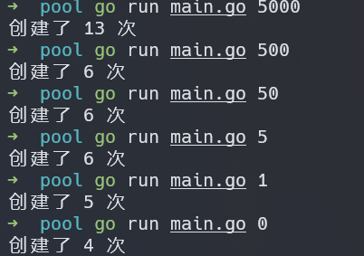

为什么需要池
用来约束创建和复用昂贵的场景，比如数据库连接
Go是怎么实现的池
通过 sync.Pool 包实现，并发安全
怎么使用
- Get 方法，首先检查池中是否有可用的实例返回给调用者,如果没有，调用New 方法创建新的实例,并返回
- 使用完该实例后，调用 Put 方法，将实例归还到池中
示例
package main
import(
"fmt"
"sync"
)
func main(){
myPool := sync.Pool{
New: func() interface{} {
fmt.Println("创建一个新的实例")
return struct{}{}
},
}
// 第一次取，池中没有实例,要新建
myPool.Get()
// 第二次取，池中也没有实例，因为没有把第一次取得实例放入到池中, 要新建
instance := myPool.Get()
// 将取到得实例放入池中
myPool.Put(instance)
// 池中已经有实例，不用新建
myPool.Get()
// 所以会输出 2 次结果
}
结果: 
第二个例子
package main
import(
"fmt"
"sync"
"time"
"strconv"
"os"
)
func main(){
numCalcsCreated := 0
calcPool := &sync.Pool{
New: func() interface{} {
numCalcsCreated ++
// 使用了 1Kb 的内存
mem := make([]byte,1024)
return &mem
},
}
calcPool.Put(calcPool.New())
calcPool.Put(calcPool.New())
calcPool.Put(calcPool.New())
calcPool.Put(calcPool.New())
const numWorks = 1024
var wg sync.WaitGroup
wg.Add(numWorks)
sleepTime, err := strconv.Atoi(os.Args[1])
if err != nil {
fmt.Println(err)
return
}
for i := 0; i < numWorks ; i ++ {
go func(){
defer wg.Done()
// 使用池化技术，每次用完之后，立即放入池中，永远只会使用少量的实例
// 也有可能归还太慢，导致用池中暂时没有实例可用，从而继续生成新的实例
mem := calcPool.Get()
time.Sleep(time.Duration(sleepTime) * time.Nanosecond)
defer calcPool.Put(mem)
}()
}
wg.Wait()
fmt.Println("创建了",numCalcsCreated, "次")
}
调整休眠时间，运行结果如下 